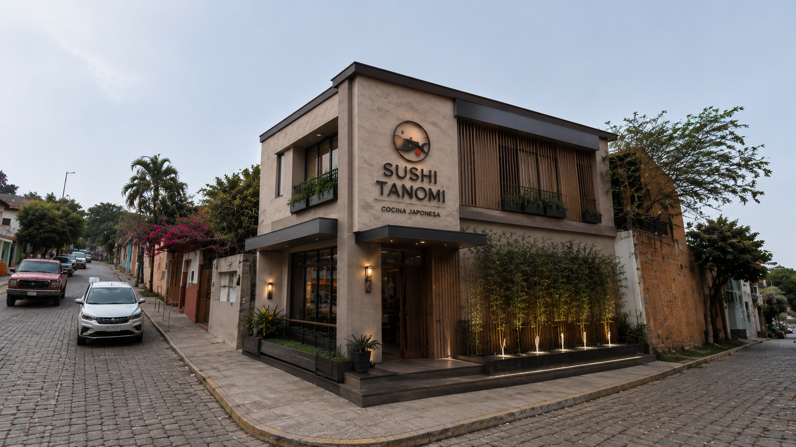

Galería
Algunas de nuestras especialidades


Conoce nuestra historia
Los favoritos de nuestros clientes
Salmón, aguacate y pepino.
$120Salmón flameado y queso crema.
$135Salmón fresco y queso crema.
$125Algunas de nuestras especialidades
Reserva tu mesa fácilmente
Visítanos Aqui
Conoce el exterior de Sushi Tanomi

Estamos para atenderte